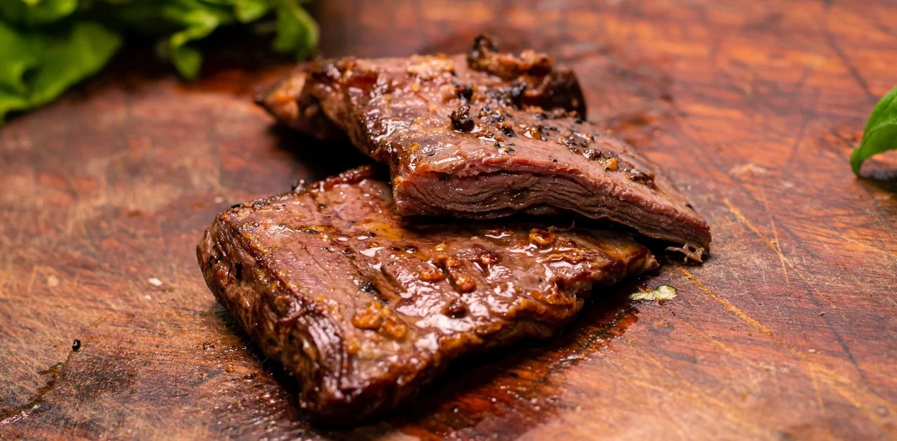

Entraña a la parrilla

No podía faltar algo de la parrilla en la lista de recetas de un argentino. La entraña es una pieza alargada y estrecha, de carne muy roja y con un sabor intensísimo
- 3 entrañas
- 2 limones
- Sal entre fina
- Hacer un buen fuego con buena brasa, ya que la entraña no requiere mucho tiempo de cocción porque no es gruesa
- Limpiar las entrañas y retirar la grasa dura superficial, que es como una tela blanca que suele tener en ambos lados
- Añadir jugo de limon y sal a gusto en ambos lados
- Cocinar en la parrilla bien caliente con mucha brasa 2 o 3 minutos por lados, dependiendo del punto que busquemos
- Servir con un poco mas de limon y listo
Inicio